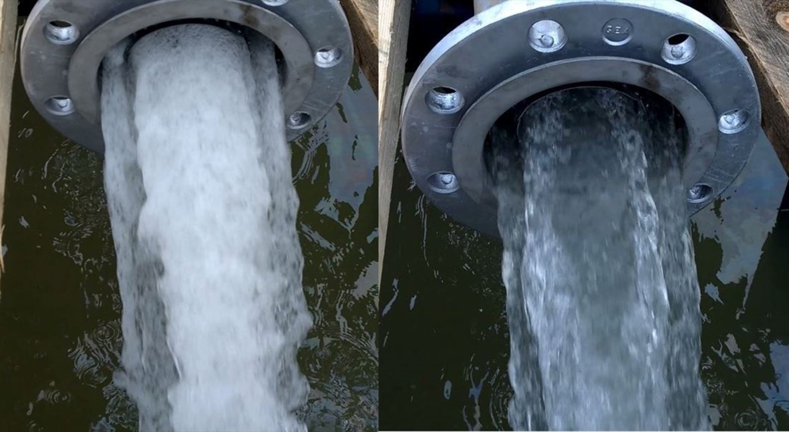

Advanced water treatment for Spain · 2026
Your water meets its limit — inside the existing pipe.
OxTube treatment for treatment plants, industry and irrigation in Spain. Installed without rebuilding your process — and you get the measured record, not a promise.
What you stop paying for
Four water problems, written the way they land on your desk. Each has a requirement that is written down somewhere — and an outcome that can be measured.
Odour and corrosion complaints
H₂S stops forming when dissolved oxygen stays above zero. You avoid the complaints, the corroding concrete and the safety risk — in networks, process water, reservoirs and lagoons.
Read more →A discharge requirement you cannot yet meet
Directive (EU) 2024/3019 makes micropollutant treatment mandatory for large plants (≥150,000 p.e.). Manufacturer document Kuopio 2019: 90 % average pharmaceutical reduction in 0.7 s. Company-reported Salo pilot: up to 100 % removal reported.
Read more →Water you are not yet allowed to irrigate with
Under RD 1085/2024 the reuse quality class decides what you may irrigate. You get treatment and monitoring against the class limit, with the point of compliance defined in the contract.
Read more →A water body that cannot carry life
Independently measured Oxygen delivered into the deep zone, and the change measured where it happens. Rekilampi: near-bottom oxygen 0.28–0.36 mg/L in 2026, up from about 0.0–0.1 mg/L.
Read more →Every substance we measured, with the full results.
The Kuopio trial reports 42 measurements. In 38 of them OxTube removed more than either conventional method tested alongside it. In four it did not, and those four are in the chart. A supplier who shows you only the wins has not shown you the trial.
Manufacturer document SansOx technical document, May 2021. Not an independent publication — that distinction is kept visible throughout this site.
Why Spain, and why now
Water reuse and micropollutant treatment create near-term demand for retrofit solutions. The driver is regulatory, not agronomic — the water either meets the class or it does not.
Royal Decree 1085/2024
Adopted 22 October 2024, in force since 24 October 2024. Reuse projects require defined responsibilities, monitoring and a declared point of compliance.
≥80 % producer share
Under Directive (EU) 2024/3019, a fourth treatment stage for micropollutants becomes mandatory by 2045 for plants of 150,000 population equivalent or more, with national transposition due in 2027. Producer funding covers at least 80 % of the eligible cost — the buyer is not carrying the full cost of compliance.
No rebuild required
Utilities need additional treatment capacity without rebuilding the full process line. OxTube installs into the existing flow.
Freshwater substitution
Reclaimed water can replace stressed freshwater resources in irrigation — where the quality class decides whether it may be used at all.
The EU A–D quality classes and their limits are on the reclaimed-water page.
Sources. Regulation (EU) 2020/741 on minimum requirements for water reuse — eur-lex.europa.eu · Directive (EU) 2024/3019 on urban wastewater treatment — eur-lex.europa.eu · Spain, Real Decreto 1085/2024 — boe.es. Regulatory summary on this site is not legal advice.
Treatment train: secondary effluent → OxTube or PharmOx treatment → required polishing barrier → reuse supply. Delivery package includes permit support, reuse risk plan, monitoring and a defined point of compliance.
How it works — from limit to record
You name the limit and the line
A quality class, a discharge permit, an odour complaint. The deliverable is the number, not the device.
OxTube goes inside the existing pipe
No rebuild of the process — installation into the line you already have.
A monitored 60–90 day pilot measures against the limit
Measurement by SpringNet Solutions; the point of compliance is agreed before the first sample.
You get the record
Records built for permit and regulator review, showing whether the limit was met. That is what you pay for.

Two outfalls, same line: water pumped through the OxTube emerges white with finely dissolved gas; the untreated flow does not. The milkiness is the dissolving step itself, not impurities.
The full technology detail — the four-stage process inside the tube, where the energy comes from, the operating envelope and a sizing tool — is in the technical annex on the pilot page.
The sites this comes from
Five Finnish sites, and what each one reported. The chart at the top of this page is the substance-level detail behind a single row of this table — Kuopio. The other four are listed here because a reference list is checkable and a claim is not.
| Site | Application | Reported result | Period |
|---|---|---|---|
| Kuopio Manufacturer document | Municipal wastewater | 90 % average pharmaceutical reduction · 0.7 s process time | 2019–2021 |
| Salo Company-reported | PharmOx pilot, treated discharge | Up to 100 % pharmaceutical removal · complete E. coli removal · >21 mg/L dissolved oxygen · PFAS reduction reported (compounds and method not published) | 2024–2026 |
| Rekilampi Independently measured | Water-body restoration | Near-bottom oxygen 0.28–0.36 mg/L vs. 0.0–0.1 baseline (+0.18–0.36 mg/L) · 5.2 ha, 18 m deep | 2023–2026 |
| Siuntio | Drinking water | Resident supply purification | — |
| Puulavesi | Drinking water | Purification for residents in the Lake Puula area | — |
Technical reference packages can combine process diagrams, sampling plans, laboratory results and operating data.
The measurement layer
Compliance is a claim until somebody measures it. SpringNet Solutions provides the monitoring that turns treatment into evidence.
Six sensor positions
A low-profile stainless-steel frame supports a flexible sensor mix.
Example parameters
Dissolved oxygen, ORP and UV absorbance support process and ecological monitoring.
Permanent installation
Protected cabling connects the underwater unit to the shore-side system.
Lifecycle service
Calibration, alerts and reporting follow the site's targets and permit needs.
Where we sit in the chain
The water is treated, the result is measured, the change becomes evidence. Three companies, one coordinated delivery — and you sign once.
The OxTube unit dissolves gas into the flow inside your existing pipe.
You are hereSensors, control software and continuous data — from baseline to report.
Visit SpringNet → CertifyOceanSite OyTurns the documented change into credit-ready evidence.
Visit OceanSite →The three companies are separately registered. The group has no published parent company or joint trading name yet, and none is claimed on this page. Who signs for what — in detail.
What we do not claim
Next step: one site, 60–90 days, monitored
Select one Spanish site and define a monitored pilot. A site pilot defines the dose, reagent, contact conditions and verification points — and produces the evidence the permit requires. No commercial guarantee is given before that evidence exists.
Define a pilot